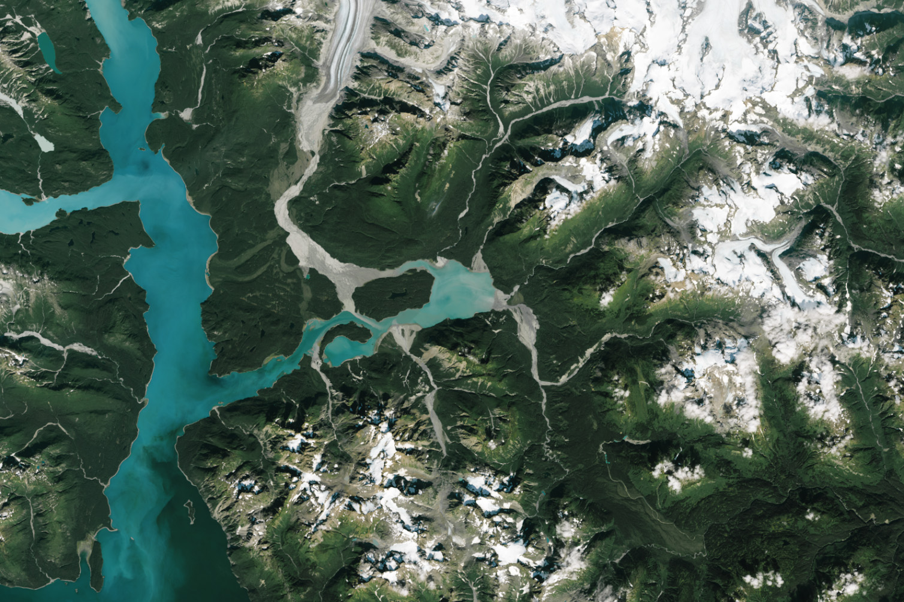
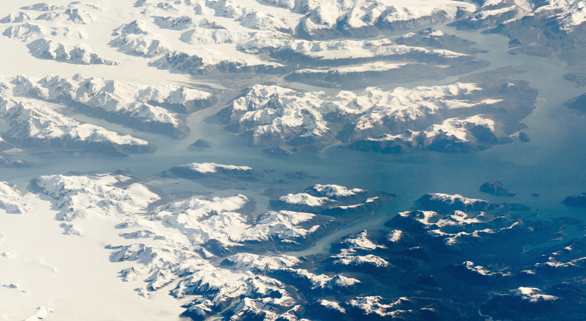
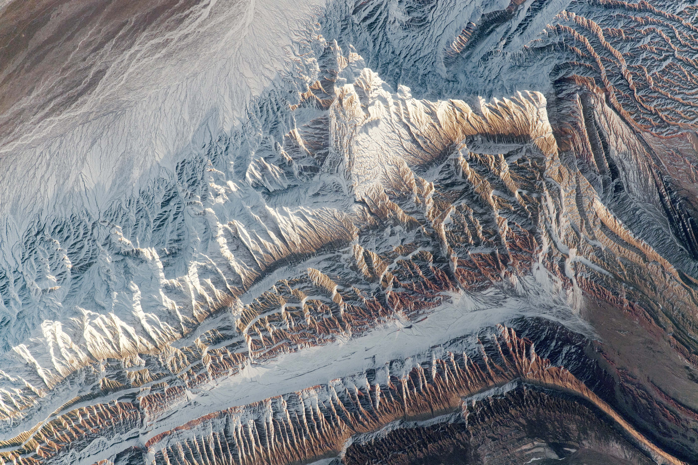

Our Land
The land on Earth is a diverse and dynamic component of the planet's surface, covering about 29% of the total area. This land is distributed across seven continents, each with unique geographic features, ecosystems, and climates. From the vast deserts of Africa to the dense rainforests of South America, the land varies in terms of topography, soil composition, and biological diversity. The highest point on Earth's land is Mount Everest, rising 8,848 meters above sea level, while the lowest point on land is the Dead Sea Depression, which lies about 430 meters below sea level.
The geological processes that shape the land on Earth include plate tectonics, erosion, and sedimentation. Plate tectonics involve the movement of the Earth's lithospheric plates, leading to the formation of mountains, earthquakes, and volcanic activity. Erosion, caused by wind, water, and ice, gradually wears down mountains and other landforms, transporting sediment to other areas where it can accumulate and create new landforms. These processes contribute to the ever-changing landscape of the Earth, with landforms continually being created and destroyed over geological time scales.
Human activities have significantly impacted the land on Earth, particularly through agriculture, urbanization, and deforestation. The conversion of natural landscapes into agricultural fields and urban areas has led to habitat loss, soil degradation, and changes in local and global climates. Deforestation, especially in tropical regions, reduces biodiversity and contributes to carbon dioxide emissions, exacerbating global warming. Sustainable land management practices are essential to mitigate these impacts and ensure that the land can continue to support human populations and natural ecosystems.
Conservation efforts and policies aimed at preserving natural landscapes are critical for maintaining the health of the Earth's land. Protected areas, such as national parks and nature reserves, play a vital role in safeguarding biodiversity and providing space for ecological processes to occur without human interference. Additionally, initiatives like reforestation, soil conservation, and sustainable agriculture can help restore degraded lands and enhance their productivity. As the global population continues to grow, balancing the needs of human development with the preservation of natural landscapes remains a pressing challenge.
Photos of Earths beautiful Land
  